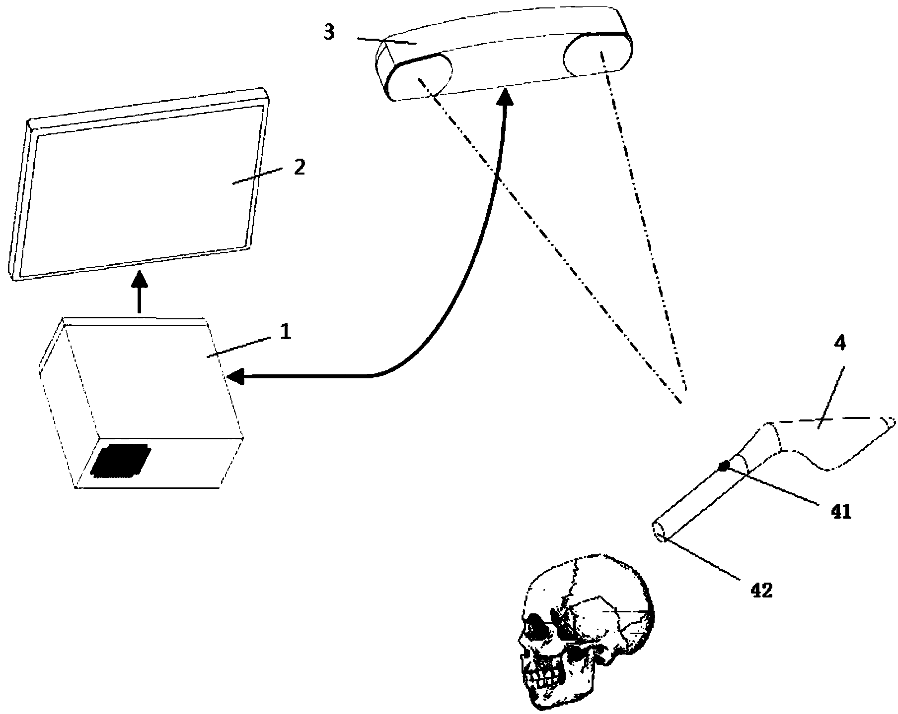

发明名称--采用无线面配准的手术导航系统
| 申请号 | CN201320353350.7 | 申请日 | 2013.06.19 | ||
| 公开（公告）号 | CN203662909U | 公开（公告）日 | 2014.06.25 | ||
| IPC分类号 | A61B19/00 | 申请（专利权）人 | 上海优益基医疗器械有限公司; | ||
| 发明人 | 王春慧;叶铭;林大明; | 优先权号 |
摘要:
本实用新型公开了一种采用无线面配准的手术导航系统，包括计算机、显示器、导航摄像探头、转换器、以及无线面配准工具；计算机电连接显示器，导航摄像探头电连接转换器，转换器与计算机电连接；无线面配准工具上设有红外传感器和红外线发射端，该红外传感器接收到导航摄像探头发射的红外信号后触发该红外线发射端发射红外线到需进行面配准部位表面；导航摄像探头收集需配准部位表面的红外信号，并将该信号通过转换器传递至计算机，计算机对信号进行处理并将处理结果与原始模型进行配准，通过显示器显示配准情况。本实用新型能简化实施导航手术前的配准工作，减少手术工具与病人的接触，降低病人感染风险，减少病人实际创口打开时间。
摘要附图:
